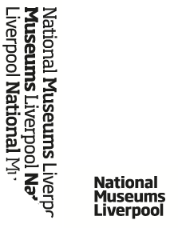

Layers of the Old Dock is a digital artwork created by Simon Bowen and Tim Shaw as part of a collaboration between Newcastle University and the Foundation for Art and Creative Technology (FACT). This artwork was sponsored by Liverpool ONE and is inspired by the collections of National Museums Liverpool
With thanks to..
Media sources acknowledged here...